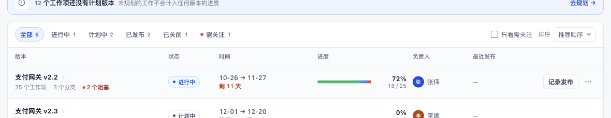
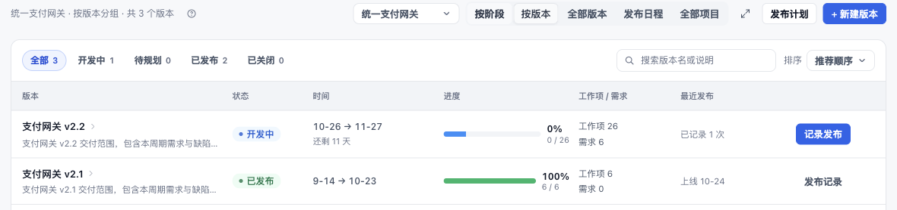
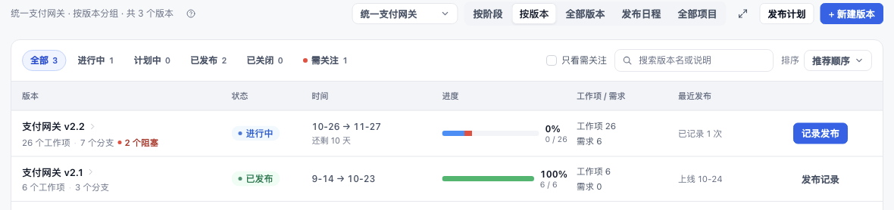

Hourglass · Version list alignment
版本主页列表：实施前后与最新原型对照
同一项目、同一演示数据（统一支付网关 v2.2 / v2.1 / v2.0）。本批只对齐列表：补「需关注」筛选与风险提示、行副标题改为工作项 / 分支 / 阻塞、进度条补阻塞段、状态命名对齐；不新增数据库字段，负责人列按确认未加。
项目：统一支付网关
数据：v2.2 · 26 工作项 / 7 分支
原型：version-page-redesign-v2（2026-11-16）
实施：2026-11-17
1最新原型
原型中的「负责人」和「2 个阻塞」为模拟数据，用于表达信息层级。
原型
v2 版本主页 · 列表
进行中 / 计划中 · 需关注 1 · 2 个阻塞 · 负责人列

状态命名：进行中 / 计划中
需关注 chip + 只看需关注勾选
副标题：工作项 · 分支 · 阻塞
进度条：完成 + 进行中 + 阻塞
2实施前（旧列表）
旧版：状态叫「开发中 / 待规划」，副标题展示版本说明，进度只有完成 / 进行中。
实施前
统一支付网关 · 版本列表
开发中 / 待规划 · 无风险筛选 · 说明作副标题

状态：开发中 / 待规划
无「需关注」入口
副标题为版本说明
无阻塞进度段
3实施后（无风险数据）
同一项目、同一数据；风险 chip 显示 0，列表其余命名与信息结构已对齐原型。
实施后
统一支付网关 · 版本列表
进行中 / 计划中 · 需关注 0 · 工作项 / 分支副标题
状态：进行中 / 计划中
需关注 chip（0）+ 勾选
副标题：工作项 · 分支
说明收进 hover 提示
4实施后 · 阻塞态（内存探针）
演示库没有阻塞 / 逾期数据；用内存探针补 2 个阻塞工作项（不写库），与原型同一视觉语境对照。
实施后 · 风险态
统一支付网关 · v2.2 有 2 个阻塞
需关注 1 · 副标题「2 个阻塞」· 进度条红色阻塞段

v2.2：26 个工作项 · 7 个分支 · 2 个阻塞
需关注计数 = 版本数 1
进度条追加红色阻塞段
已发布行不因日期过期算风险
5差异清单
原型 vs 实施前 vs 实施后（本批范围）
| 要点 | 最新原型 | 实施前 | 实施后 | 结论 |
|---|
| 状态命名 |
进行中 / 计划中 / 已发布 / 已关闭 / 已取消 |
开发中 / 待规划 / 已发布 / 已关闭 / 已取消 |
与原型一致 |
已对齐 |
| 需关注筛选 |
chip（红点 + 数量）+「只看需关注」 |
无 |
chip + 勾选，状态 / 搜索 / 排序可叠加 |
已对齐 |
| 风险口径 |
未完成阻塞 > 0，或未结束且目标已过 |
无 |
同原型；已发布不因日期过期算风险 |
已对齐 |
| 行副标题 |
工作项 · 分支 · 风险（红点 + 文案） |
版本说明（单行截断） |
工作项 · 分支 · 风险；说明改为 hover 提示 |
已对齐 |
| 进度条 |
完成（绿）+ 进行中（蓝）+ 阻塞（红） |
完成 + 进行中 |
完成 + 进行中 + 阻塞；阻塞不计入进行中 |
已对齐 |
| 负责人列 |
有（头像 + 姓名） |
无，用「工作项 / 需求」列 |
保留「工作项 / 需求」列 |
按确认未加（需改表） |
| 行密度 / 状态胶囊 |
66px 行高、带圆点的软胶囊 |
产品既有行高与 tag |
沿用产品既有行高与 tag，仅改文案 |
保留既有视觉 |
数据口径风险计数按「版本」计（一个版本有阻塞即 +1），不是按阻塞工作项数计；与原型 counts().risk 一致。
为什么用探针演示库没有任何阻塞或逾期版本，正常截图无法展示风险态；探针只改浏览器内存，验证后已撤下，未写数据库。
范围外顶栏三页签、发布日程、投入分析、全部项目分组、批量新建发布计划不在本批；版本状态文案已统一到列表、详情头、任务抽屉版本候选与项目版本下拉（进行中 / 计划中），未涉及其他旧命名。
phase.js / version-detail.mjs 语法检查通过
git diff --check 无空白错误
E2E 全量通过（含风险断言、探针、390 窄屏）
无数据库变更、无新增字段
列表交互无脚本异常